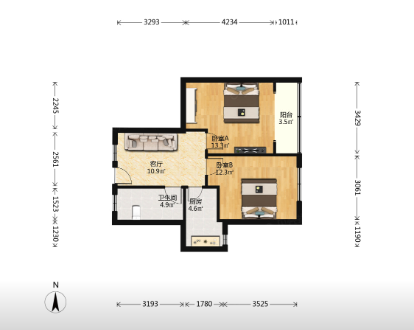
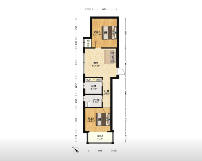
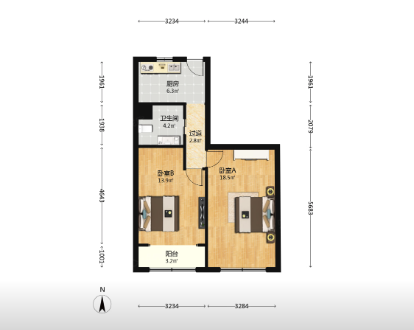
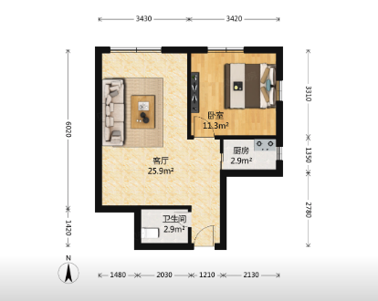
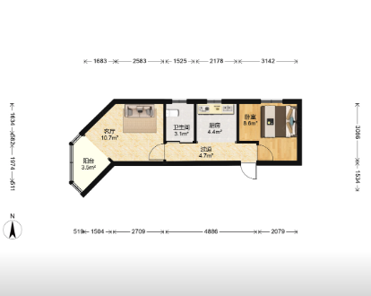

两室一厅整租,目的地:西岸中环二期(徐汇滨江)。通勤为宝宝手机苹果地图实测截图,周一早高峰;户型面积来自贝壳户型图标注,户型图为贝壳户型图截图(汉中 7500 暂无,待补)。
| 房源 | 租金 | ㎡ | 楼层 | 正经两室 | 明卫 | 地铁(分) | 驾车(分) |
|---|---|---|---|---|---|---|---|
| 复元坊 | 6800 季付 | 81 | 低/20 | 是 | 是 | 50 | 31 |
| 汉中小区(7500) | 7500 季付 | 76 | 中/24 | 待核 | 待核 | 42 | 32 |
| 和源馨苑 | 6300 月付 | 83 | 1/31(一楼) | 是 | 否 | 54 | 32 |
| 武进大楼 | 6800 季付 | 67 | 中/16 | 否 | 否 | 50 | 34 |
| 南星小区 | 6825 | 66 | 10/20 | 否 | 待核 | — | 29 |
| 汉中小区(6800) | 6800 季付 | 51 | 低/22 | 否 | 否 | 42 | 32 |

| 正经两室 | 是:有厅 + 两间独立卧室 |
| 明卫 | 是(卫在西南角外墙,户型图上有窗洞,到场确认) |
| 1.7m 电脑桌 | 卧A、卧B 均放得下 |
| 停车 | 未知 |
| 到三门路站(云际商铺A) | 地铁约 38 分 · 驾车约 16 分 步行约15到海伦路站 → 10号线7站 → 步行约3;均为估算(无高德数据) |
| 到宝宝上班处 | 地铁 50 分 · 驾车 31 分(8.3km) 步行10 → 8号线 → 步行4 → 12号线(曲阜路→大木桥路) → 步行16 |
面积/格局最优之一;低楼层需到场看采光。备选地铁方案 57 分。
| 正经两室 | 待核(卡片标注 2室1厅):户型图未取得逐间尺寸;VR 见朝南卧室带飘窗 |
| 明卫 | 待核 |
| 1.7m 电脑桌 | 待核 |
| 停车 | 未知 |
| 到三门路站(云际商铺A) | 地铁约 47 分 · 驾车约 20 分 步行12 → 12号线2站到天潼路 → 换10号线9站 → 步行约3;均为估算(无高德数据) |
| 到宝宝上班处 | 地铁 42 分 · 驾车 32 分(8.4km) 步行12 → 12号线直达 → 步行16(同小区 6800 那套的路线) |
预计 2026-11-16 可入住;近地铁;包物业费、自采暖。需要到场确认户型和卫生间位置。

| 正经两室 | 是:有厅 + 两间独立卧室 |
| 明卫 | 否(两个卫都在户型中部) |
| 1.7m 电脑桌 | 客厅、卧B 放得下 |
| 停车 | 未知 |
| 到三门路站(云际商铺A) | 地铁约 38 分 · 驾车约 14 分 步行约13到海伦路站 → 10号线7站 → 步行约3;均为估算(无高德数据) |
| 到宝宝上班处 | 地铁 54 分 · 驾车 32 分(8.8km) 步行13 → 8号线 → 步行4 → 12号线 → 步行16 |
押一付一、月付,最便宜;但一楼要看潮湿、采光、私密与安全。第二个卫生间面积为 OCR 读取,待核。

| 正经两室 | 否:无厅,所谓“客厅”实为大卧室 |
| 明卫 | 否(卫居中) |
| 1.7m 电脑桌 | 卧A 放得下 |
| 停车 | 旁边露天空地 |
| 到三门路站(云际商铺A) | 地铁约 36 分 · 驾车约 16 分 步行约10到天潼路站 → 10号线9站 → 步行约3;均为估算(无高德数据) |
| 到宝宝上班处 | 地铁 50 分 · 驾车 34 分(9.3km) 步行15 → 12号线(天潼路站上) → 步行16 |
1985 年老楼。7200 与 6800 实为同一套(现价 6800)。

| 正经两室 | 否:只有 1 间标注卧室 |
| 明卫 | 待核(卫在左下角,看不出有无窗) |
| 1.7m 电脑桌 | 客厅放得下 |
| 停车 | 对面空地 |
| 到三门路站(云际商铺A) | 地铁约 40 分 · 驾车约 20 分 步行约12到天潼路站 → 10号线9站 → 步行约3;均为估算(无高德数据) |
| 到宝宝上班处 | 地铁 — · 驾车 29 分(7.5km) 未取得地铁截图;驾车最近(7.5km) |
朝北,需下午到场看光线;距离最近、开车最快。

| 正经两室 | 否:无厅,小卧仅 8.6㎡ |
| 明卫 | 否 |
| 1.7m 电脑桌 | 小卧放不下;大卧可 |
| 停车 | 未知 |
| 到三门路站(云际商铺A) | 地铁约 47 分 · 驾车约 20 分 同汉中 7500;均为估算(无高德数据) |
| 到宝宝上班处 | 地铁 42 分 · 驾车 32 分(8.4km) 同汉中 7500:12号线直达 |
51㎡ 偏小,已被嫌弃。
数据:中介转发的贝壳房源卡片与户型图、宝宝的通勤截图;宝宝已排除紫兰苑(8000,地铁52/驾车35)与观景苑(7392,地铁53/驾车32)。价格与可租状态以中介为准。